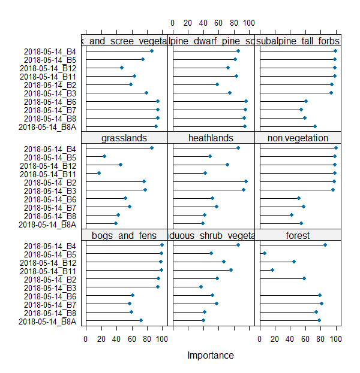

Case study: Monitoring tundra grasslands (Karkonosze/Krkonoše)
In this case study we will focus on classifying non-forest tundra vegetation in higher parts of Karkonosze/Krkonoše Mountains, laying on the Polish-Czech border. The process will consist of extracting reference data based on field inventory from multitemporal Sentinel-2 imagery and classifying it with the Support Vector Machine algorithm. Additional analysis will consist of feature importance assessment performed for grasslands class as the main object of this case study.
This exercise we’ll be conducted with R and RStudio. If you haven’t already done this, refer to this tutorial regarding the environment setup: R environment setup tutorial.
Study area and data
Before you continue, get familiar with the use case: Land cover monitoring in Karkonosze/Krkonoše Mountains (Poland/Czechia).
… and read the paper accompanying the use case and case study:
Wakulińska, M., & Marcinkowska-Ochtyra, A. (2020). Multi-temporal sentinel-2 data in classification of mountain vegetation. Remote Sensing, 12(17), 2696. https://doi.org/10.3390/rs12172696
Download exercise data provided through Zenodo.
Imagery data
In the case study Sentinel‐2 satellite images with no/minimal cloud coverage from 7 terms of 2018 and 2019 will be used. The dates were chosen to take into account the variability of alpine and subalpine grasslands during one growing season. The limitation was the high occurrence of clouds during the chosen period. The data with 2A processing level were selected. The processing pipeline for preparing data for this Case Study is showcased in Theme 3 exercise processing pipeline 3.
The reference data came mainly from the field, as these are not simple land cover classes but more complex ones, botanical information was required. The designated classes included: grasslands (G; of special importance), deciduous shrubs vegetation (DSV), bogs and fens (BF), subalpine tall-forbs (STF), rocks and scree vegetation (RSV), heathlands (H), subalpine dwarf pine scrubs (SDPS) and forests (F).
Environment preparation: loading required libraries and data
To start with, we want to load necessary libraries and data and set up some initial variables, which we will use further down the line.
Firstly, load required libraries into the environment: terra, sf, dplyr, caret, kernlab and ggsci. Functions included in these packages will be used in the latter parts of this case study.
# raster I/o and processing
library(terra)
# vector I/O and processing
library(sf)
# tabular data manipulation
library(dplyr)
# model tuning and training
library(caret)
# applying model
library(kernlab)
# visualization colour palettes
library(ggsci)
We can move to loading up the required data. We shall start with the raster data. The imagery used in this case study are Sentinel-2 images collected in 2018 and 2019 within the growing season (exact dates are 14 May, 31 May, 7 August, 27 August, 18 September (2018), 25 June and 30 June (2019)). Data preparation pipeline for this case study was presented in the pipeline 3 in Theme 3 exercise.
Note: we have combined the set of all seven scenes into one to select data from it for each of the 3 scenarios. The bands are ordered chronologically, from May 2018 to June 2019.
# load .tif image of stacked 70 bands (10 bands per 7 acquisition dates)
image_data <- rast("case_study_1/data_exercise/CS1_image_data.tif")
Now add the vector reference data to our workspace. It consists of field collected polygons with appropriate classes assigned (including grasslands, which are the most interesting from this case study point of view) , which will be used to classify multitemporal Sentinel-2 images from 2018 and 2019. Load .shp file to the reference_data variable.
# load reference .shp dataset containing reference polygons
# with class names and acronyms
reference_data <- st_read("case_study_1/data_exercise/CS1_reference_data.shp")
Reference values extraction
The two main required data sources are now loaded into the workspace, so we can proceed with preparing data for classification. First of all, we need to extract pixel values from loaded images of areas covered by the reference data. In order to do that we will use our own function, which will assign each pixel in each polygon values from spectral bands of Sentinel-2 imagery.
extract_pixel_values <- function(image, vector_reference, class_field_name){
# number of polygon used to extract
counter <- 1
# information about progress printed in the console
print("Number of polygons done:")
# number of polygons in the reference dataset
number_of_polygons <- nrow(vector_reference)
# empty data frame to store the results of extraction
extracted_values <- data.frame()
# which columns stores the class names
class_column_index <- which(names(vector_reference) == class_field_name)
for (polygon_index in seq(number_of_polygons)) {
selected_polygon <- vector_reference[polygon_index, ]
class_name <- selected_polygon$class
# extract pixel values from selected polygon
polygon_pixel_values <- extract(image, selected_polygon, df = TRUE)
# add class name and polygon index to extracted values
polygon_pixel_values <- cbind(polygon_pixel_values[ ,2: ncol(polygon_pixel_values)],
class_name,
polygon_index)
# add the extracted values with additional information to the results data frame
extracted_values <- rbind(extracted_values, polygon_pixel_values)
# information about progress printed in the console
print(paste0(counter, "/", number_of_polygons))
counter <- counter + 1 # go to the next polygon
}
return(extracted_values) # function results - data frame with extracted values
}
Now we shall use the above function to extract the values with the data from the reference dataset we loaded earlier. This process should take about 3 minutes. You can observe the progress in the console.
# use the above function to extract pixel values from the reference dataset,
# set class_field_name as "class" (the name of the field containing desired
# information in the .shp loaded to reference_data variable)
pixel_reference <- extract_pixel_values(image_data, reference_data, "class")
In order for the classifier to work properly we only want to retain observations with no NA values.
pixel_reference <- na.omit(pixel_reference)
Save the extracted and filtered values to .RDS file.
# save pixel reference
saveRDS(pixel_reference, file = "case_study_1/results/pixel_reference.RDS")
We now have all the data we need to proceed. We will start with classifying single scenes, then multitemporal classification and end with best features selection classification. Each classification will be performed using the Support Vector Machine algorithm with radial kernel function. Each time we’ll preceed the classifcation with parameters tuning. The scheme of the procedure in the entire case study is presented in the figure below.
Case study 1 scheme of procedure.
Analysis
Classification scenario 1: single scene
We will start the single scene classification process with extracting only Sentinel-2 bands values from the single scene. In case of the earliest acquired image (14 May 2018) these will be the first 10 columns of the pixel_reference data frame, as well two last columns including class names and polygon indices.
# select columns with pixel values from the first term of acquisition
# plus class names and indices
pixel_reference_14May <- pixel_reference %>%
select(`2018-05-14_B2`:`2018-05-14_B12`, class_name, polygon_index)
In order to make our work reproducible we shall set a common seed number.
set.seed(1410)
We can now assess how many pixel samples for every class we acquired during values extraction.
# show in the console the amount of pixel samples for every class
table(pixel_reference_14May$class_name)
In comparison we can see how many polygons for each class.
# show in the console the amount of polygons for every class
table(reference_data$class)
In this part we will divide our reference dataset into training and validation parts. We will divide the whole set into 2 parts of equal number of polygons in each of 2 parts. Notice that the number of pixels may be different in both sets due to differences in polygon sizes.
# randomly pick half of observations based on class field
train_index <- createDataPartition(reference_data$class, p = 0.5, list = FALSE)
# select training pixel observations using polygon indexes
training_data <- pixel_reference_14May[pixel_reference_14May$polygon_index %in% train_index, ]
# select validation pixel observations using polygon indexes
validation_data <- pixel_reference_14May[!(pixel_reference_14May$polygon_index %in% train_index), ]
# show in the console the amount of pixel samples in training data
table(training_data$class_name)
# show in the console the amount of pixel samples in validation data
table(validation_data$class_name)
Now that we established the training and validation datasets we can perform a step called tuning classification parameters. For determining best parameters we will use tenfold cross validation of results achieved with different sets of predetermined parameters.
# set 10-fold cross validation to find the best model
control <- trainControl(method = "cv", number = 10)
# test these parameters to find the best combination
tune_parameters <- data.frame(C = c(10, 100, 100), sigma = c(0.1, 0.5, 0.95))
# train the model using SVM with radial kernel using selected parameters
model <- train(training_data[, 1:10],
training_data$class_name,
method = "svmRadial",
trControl = control,
tuneGrid = tune_parameters)
We can plot the variable importance. Features are sorted descending from the most useful in classification (importance summed for all the classes). For now, we will not dig deeper into this subject. We will return to feature selection and importance analysis in classification scenario 3.
varImp(model) # show predictors apparent importance
plot(varImp(model)) # plot predictors apparent importance

Variable importance.
We will now assess the accuracy of the model by applying it to the validation dataset.
# use the chosen model to predict classes in the validation dataset
predictions <- predict(model, validation_data[, 1:10])
# show confusion matrix based on validation results
confusion_matrix <- confusionMatrix(predictions,
as.factor(validation_data$class_name),
mode = "everything")
# show accuracy metrics in the console
print(round(confusion_matrix$overall, 3))
# save confusion matrix
saveRDS(confusion_matrix,
file = "case_study_1/results/14May_confusion_matrix.RDS")
In this part of the exercise we will use the model to classify the image. In order to do that we no need to extract the bands from the multitemporal data brick, which were acquired on 14 May.
bands_14May <- subset(image_data, c(1:10))
And now we can apply the model to the appropriate 10 bands. This will classify the image into the classes provided earlier with the reference dataset.
We will first classify only the spatial subset of the whole image to use it in results comparison.
aoi <- vect("case_study_1/data_exercise/aoi.shp")
# crop the whole image to the interesting polygon
bands_14May_crop <- crop(bands_14May, ext(aoi))
try(terra::predict(bands_14May_crop,
model,
filename = "case_study_1/results/14May_sample_classification_result.tif",
progress = "text",
format = "GTiff",
na.rm = TRUE),
silent = TRUE)
You have successfully classified 1 of the 7 images contained in the case study data repository. Your task is now to go over necessary steps to classify the remaining 3 images. In order to speed things up we will provide a looped function of the steps above to automatically produce the results for 6 remaining dates.
First prepare two variables to be used inside the loop. The first one indicates bands of different sets (which are numbers of fields in the pixel_reference variable). The second one will be used to name the results.
scene_list <- list(c(11:20), c(21:30), c(31:40), c(41:50), c(51:60), c(61:70))
scene_scenario_name <- c("31May", "7Aug", "27Aug", "18Sep", "25Jun", "30Jun")
The steps presented earlier are repeated with small adjustments to be able to work inside the loop.
for (i in seq(length(scene_scenario_name))) {
scene_index <- scene_list[[i]]
scenario_name <- scene_scenario_name[i]
print(scenario_name)
scenario_pixel_reference <- pixel_reference[c(scene_index, 71, 72)]
set.seed(1410)
train_index <- createDataPartition(reference_data$class, p = 0.5, list = FALSE)
training_data <- scenario_pixel_reference[scenario_pixel_reference$polygon_index %in% train_index, ]
validation_data <- scenario_pixel_reference[!(scenario_pixel_reference$polygon_index %in% train_index), ]
control <- trainControl(method = "cv", number = 10)
tune_parameters <- data.frame(C = c(10, 100, 100), sigma = c(0.1, 0.5, 0.95))
model <- train(training_data[, 1:10],
training_data$class_name,
method = "svmRadial",
trControl = control,
tuneGrid = tune_parameters)
predictions <- predict(model, validation_data[, 1:10])
confusion_matrix <- confusionMatrix(predictions,
as.factor(validation_data$class_name),
mode = "everything")
print(round(confusion_matrix$overall, 3))
saveRDS(confusion_matrix,
file = paste0("case_study_1/results/",
scenario_name,
"_confusion_matrix.RDS"))
scenario_bands <- subset(image_data, c(scene_index))
scenario_bands_crop <- crop(scenario_bands, ext(aoi))
try(terra::predict(scenario_bands_crop,
model,
filename = paste0("case_study_1/results/",
scenario_name,
"_sample_classification_result.tiff"),
progress = "text",
format = "GTiff",
na.rm = TRUE))
}
After the loop has completed you should be able to see 4 resulting images and confusion matrices inside your working directory. Let’s compare the results.
First, let’s load all the saved confusion matrices.
cm_14May <- readRDS("case_study_1/results/14May_confusion_matrix.RDS")
cm_31May <- readRDS("case_study_1/results/31May_confusion_matrix.RDS")
cm_7Aug <- readRDS("case_study_1/results/7Aug_confusion_matrix.RDS")
cm_27Aug <- readRDS("case_study_1/results/27Aug_confusion_matrix.RDS")
cm_18Sep <- readRDS("case_study_1/results/18Sep_confusion_matrix.RDS")
cm_25Jun <- readRDS("case_study_1/results/25Jun_confusion_matrix.RDS")
cm_30Jun <- readRDS("case_study_1/results/30Jun_confusion_matrix.RDS")
We will set the labels for easier plotting. You can relate acronyms to the full class names by looking at the reference dataset attributes table.
labels <- c("BF", "DSV", "F", "G", "H", "NV", "RSV", "SDPS", "STF")
From the confusion matrices variables we want to pull F1 metric to compare the results to one another. In order to do this we shall access one of the numbers stored inside the variable (we chose F1 because it combines producer and user accuracies, making the comparison more general, of course you can select and compare other available measures in the confusion matrix).
f1_14May <- cm_14May$byClass[, 7]
f1_31May <- cm_31May$byClass[, 7]
f1_7Aug <- cm_7Aug$byClass[, 7]
f1_27Aug <- cm_27Aug$byClass[, 7]
f1_18Sep <- cm_18Sep$byClass[, 7]
f1_25Jun <- cm_25Jun$byClass[, 7]
f1_30Jun <- cm_30Jun$byClass[, 7]
With that we are able to plot the results. We will show them in 2 ways: by points and bars.
# set colour palette for all the remaining plots
colour_palette <- pal_d3("category10", alpha = 0.7)(9)
png(filename = "case_study_1/results/comp_points.png",
width = 1920,
height = 1080,
res = 200,
pointsize = 9)
plot(f1_14May, xaxt = "n", xlab = "Class", ylab = "F1",
ylim = c(0,1), pch = 1, col = colour_palette[1], lwd = 2, las = 2,
main = "Comparison of F1 scores for different terms of data acquisition.")
abline(h = c(0,0.2,0.4,0.6,0.8,1), lty = 3)
points(f1_31May, pch = 2, col = colour_palette[2], lwd = 2)
points(f1_7Aug, pch = 3, col = colour_palette[3], lwd = 2)
points(f1_27Aug, pch = 4, col = colour_palette[4], lwd = 2)
points(f1_18Sep, pch = 5, col = colour_palette[5], lwd = 2)
points(f1_25Jun, pch = 7, col = colour_palette[6], lwd = 2)
points(f1_30Jun, pch = 8, col = colour_palette[7], lwd = 2)
axis(1, at = 1:9, labels = labels)
legend("bottom",
legend = c("14May", "31May", "7Aug", "27Aug", "18Sep", "25Jun", "30Jun"),
col = colour_palette[1:7], pch = c(1, 2, 3, 4, 5, 6, 7), cex = 1.1,
title = "Terms of data acquisition")
dev.off()

F1 accuracy for different terms of data acquisition.
# barplot
f1_matrix <- matrix(data = c(f1_14May, f1_31May, f1_7Aug, f1_27Aug, f1_18Sep, f1_25Jun, f1_30Jun), ncol = 9, nrow = 7, byrow = TRUE)
png(filename = "case_study_1/results/comp_barplot.png", width = 1920, height = 1080, res = 200, pointsize = 9)
par(mar=c(5, 4, 4, 8), xpd = TRUE)
barplot(f1_matrix, beside = TRUE, xaxt = "n", xlab = "Class", ylab = "F1",
ylim = c(0, 1), las = 2, col = colour_palette[1:7],
main = "Comparison of F1 scores for different terms of data acquisition.")
legend("topright", legend = c("14May", "31May", "7Aug", "27Aug", "18Sep", "25Jun", "30Jun"),
fill = colour_palette[1:7], title = "Terms of\ndata acquisition", inset=c(-0.1, 0))
par(xpd=FALSE)
abline(h = c(0, 0.2, 0.4, 0.6, 0.8, 1), lty = 3)
axis(1, at=c(4.5, 12.5, 20.5, 28.5, 36.5, 44.5, 52.5, 60.5, 68.5), labels = labels)
dev.off()

F1 accuracy for different terms of data acquisition.
TASK: Assess the results using F1 values shown on the plots. Focus on the grasslands (G) class.
Classification scenario 2: multitemporal set
After we classified each individual term we now want to classify the multitemporal set. The steps will be very similar to what we have done previously with single term classification. The main difference will be that we now want to use all 70 bands in model building and classification.
TASK: Perform classification scenario consisting of all the available bands. Try to recreate the steps learned in the single term classification. Save the results: confusion matrix as All_terms_confusion_matrix.RDS and image as All_terms_sample_classification_result.tif. In case of any problems you can look below at the solution.
Solution with code.
set.seed(1410)
train_index <- createDataPartition(reference_data$class, p = 0.5, list = FALSE) # randomly pick half of observations based on class field
training_data <- pixel_reference[pixel_reference$polygon_index %in% train_index, ] # select training pixel observations using polygon indexes
validation_data <- pixel_reference[!(pixel_reference$polygon_index %in% train_index), ] # select validation pixel observations using polygon indexes
control <- trainControl(method = "cv", number = 10) # set 10-fold cross validation to find the best model
tune_parameters <- data.frame(C = c(10, 100, 100), sigma = c(0.1, 0.5, 0.95)) # test these parameters to find the best combination
model <- train(training_data[, 1:70], training_data$class_name, method = "svmRadial", trControl = control, tuneGrid = tune_parameters) # train the model using SVM with radial kernel using selected parameters
predictions <- predict(model, validation_data[, 1:70]) # use the chosen model to predict classes in the validation dataset
confusion_matrix <- confusionMatrix(predictions, as.factor(validation_data$class_name), mode = "everything") # show confusion matrix based on validation results
print(round(confusion_matrix$overall, 3)) # show confusion metrics in the console
saveRDS(confusion_matrix, file = "case_study_1/results/All_terms_confusion_matrix.RDS") # save confusion matrix
image_data_crop <- crop(image_data, ext(aoi)) # crop the whole image to the interesting polygon
try(terra::predict(image_data_crop, model, filename = "case_study_1/results/All_terms_sample_classification_results.tif", progress = "text", format = "GTiff", na.rm = TRUE), silent = TRUE)
Now also compare the results of the multitemporal classification to the single term classification. Add one more result from the confusion matrix to the plots we produced earlier. We will only present the barplot version (but point plots are a valid presentation option as well).
cm_all_terms <- readRDS("case_study_1/results/All_terms_confusion_matrix.RDS")
f1_all_terms <- cm_all_terms$byClass[, 7]
# barplot
f1_matrix <- matrix(data = c(f1_14May, f1_31May, f1_7Aug, f1_27Aug,
f1_18Sep, f1_25Jun, f1_30Jun, f1_all_terms),
ncol = 9, nrow = 8, byrow = TRUE)
png(filename = "case_study_1/results/comp2_barplot.png",
width = 1920, height = 1080, res = 200, pointsize = 9)
par(mar=c(5, 4, 4, 8), xpd = TRUE)
barplot(f1_matrix, beside = TRUE, xaxt = "n", xlab = "Class", ylab = "F1",
ylim = c(0, 1), las = 2, col = colour_palette[1:8],
main = "Comparison of F1 scores for different classification input datasets.")
legend("topright", legend = c("14May", "31May", "7Aug", "27Aug",
"18Sep", "25Jun", "30Jun", "All_terms"),
fill = colour_palette[1:8],
title = "Classification input datasets",
bty = "n",
xjust = 1,
inset=c(-0.1, 0))
par(xpd = FALSE)
abline(h = c(0, 0.2, 0.4, 0.6, 0.8, 1), lty = 3)
axis(1, at = c(5, 14, 23, 32, 41, 50, 59, 68, 77), labels = labels)
dev.off()
F1 accuracy for different classification input datasets.
TASK: Assess the results using F1 values shown on the plots. Focus on the grasslands (G) class.
Classification scenario 3: selected features
In this case study we use the area under ROC (Receiver Operator Characteristic) curves to measure the importance of every input feature. ROC curve is graphical plotting of true positive and false positive rates at different thresholds for binary classification results. See more details about it on classification problems in Serrano et al., 2010. Since we are focused on grasslands we want to discover the best variables for this class, not for the whole classified image (for the second one you can use e.g. statistical variable importance analysis in Random Forests classifier).

ROC curve generated for grasslands class.
Most of the classification scenarios will be similar to what we previously showed. One additional step now is best feature selection for classification. We will assess this by looking at the graphs and numbers showing apparent importance. This will allow us to choose which predictors (bands) to use in the final model. For now, let’s go through the necessary steps.
set.seed(1410)
# randomly pick half of observations based on class field
train_index <- createDataPartition(reference_data$class, p = 0.5, list = FALSE)
# select training pixel observations using polygon indexes
training_data <- pixel_reference[pixel_reference$polygon_index %in% train_index, ]
# select validation pixel observations using polygon indexes
validation_data <- pixel_reference[!(pixel_reference$polygon_index %in% train_index), ]
# set 10-fold cross validation to find the best model
control <- trainControl(method = "cv", number = 10)
# test these parameters to find the best combination
tune_parameters <- data.frame(C = c(10, 100, 100), sigma = c(0.1, 0.5, 0.95))
# train the model using SVM with radial kernel
model <- train(training_data[, 1:70],
training_data$class_name,
method = "svmRadial",
trControl = control,
tuneGrid = tune_parameters)
Now we can see the variable importance values for all the classes. We’ll plot the first 15 features
# show predictor apparent importance
feature_selection <- varImp(model)
# plot predictor apparent importance
plot(feature_selection, top = 15)
Plotting many variables for a few classes causes the plot to be almost unreadable. We can fortunately pull the necessary values from the model. This information will now be used to sort the variable importance in descending order using previously mentioned ROC scores for the grasslands class. Predictor names with the highest apparent importance for grasslands classification can be then identified and chosen for the final classification model. In our case we will choose 10 best performing predictors.
# values of apparent importance for grasslands class
ROC_scores_grasslands <- feature_selection$importance$grasslands
# predictor names for best performing predictors
names(ROC_scores_grasslands) <- rownames(feature_selection$importance)
# arrange predictors from best to least performing
ROC_scores_grasslands <- sort(ROC_scores_grasslands, decreasing = TRUE)
The values could be plotted in many readable ways. For this case study we supply the horizontal barplot, with colours of the bars corresponding to the dates of data acquisition.
Code to prepare this barplot.
colours <- c(colour_palette[6], colour_palette[6], colour_palette[3], colour_palette[2], colour_palette[3], colour_palette[7], colour_palette[2], colour_palette[4], colour_palette[7], colour_palette[4], colour_palette[2], colour_palette[3], colour_palette[6], colour_palette[7], colour_palette[4], colour_palette[5], colour_palette[5], colour_palette[1], colour_palette[1], colour_palette[1], colour_palette[6], colour_palette[5], colour_palette[7], colour_palette[2], colour_palette[6], colour_palette[6], colour_palette[3], colour_palette[2], colour_palette[2], colour_palette[7], colour_palette[1], colour_palette[6], colour_palette[7], colour_palette[2], colour_palette[6])
rev_colours <- rev(colours)
ROC_scores_grasslands_increasing <- sort(ROC_scores_grasslands[1:35])
png(filename = "case_study_1/results/grasslands_importance.png", width = 1920, height = 1080, res = 200, pointsize = 9)
barplot(ROC_scores_grasslands_increasing,
names = names(ROC_scores_grasslands_increasing),
horiz = TRUE,
main = "Grasslands class feature importance",
xlab = "Importance",
las = 1,
border = NA,
cex.names = 0.5,
xlim = c(60, 100),
xpd = FALSE,
col = rev_colours
)
legend("bottomright", legend = c("14May", "31May", "7Aug", "27Aug", "18Sep", "25Jun", "30Jun"),
fill = colour_palette[1:7], title = "Terms of data acquisition")
dev.off()

The most important features for grasslands class.
Based on the plot and the values we can assess which predictors would work best in classifying grasslands with the highest accuracy. Now from the pixel_reference variable we are able to pull values of the best 10 performing predictors and use it to classify the image. The overall procedure is similar to the previous steps.
# pull 10 best performing predictors names
first_10 <- names(ROC_scores_grasslands)[1:10]
# get first most informative predictors
best_10_predictors <- pixel_reference[, c(which(names(pixel_reference) %in% first_10), 71, 72)]
TASK: Use best_10_predictors to perform classification. Divide the dataset into training and validation data, train and apply model, and save confusion matrix as FS_confusion_matrix.RDS and image as FS_sample_classification_result.tif (FS meaning Feature Selection).
Solution with code.
set.seed(1410)
# randomly pick half of observations based on class field
train_index <- createDataPartition(reference_data$class, p = 0.5, list = FALSE)
# select training pixel observations using polygon indexes
training_data <- best_10_predictors[best_10_predictors$polygon_index %in% train_index, ]
# select validation pixel observations using polygon indexes
validation_data <- best_10_predictors[!(best_10_predictors$polygon_index %in% train_index), ]
# set 10-fold cross validation to find the best model
control <- trainControl(method = "cv", number = 10)
# test these parameters to find the best combination
tune_parameters <- data.frame(C = c(10, 100, 100), sigma = c(0.1, 0.5, 0.95))
# train the model using SVM with radial kernel using selected parameters
model <- train(training_data[, 1:10],
training_data$class_name,
method = "svmRadial",
trControl = control,
tuneGrid = tune_parameters)
# use the chosen model to predict classes in the validation dataset
predictions <- predict(model, validation_data[, 1:10])
# show confusion matrix based on validation results
confusion_matrix <- confusionMatrix(predictions,
as.factor(validation_data$class_name),
mode = "everything")
# show confusion metrics in the console
print(round(confusion_matrix$overall, 3))
# save confusion matrix
saveRDS(confusion_matrix, file = "case_study_1/results/FS_confusion_matrix.RDS")
scenario_bands <- subset(image_data, first_10)
# crop the whole image to the interesting polygon
image_data_crop <- crop(scenario_bands, ext(aoi))
try(terra::predict(image_data_crop,
model,
filename = "case_study_1/results/FS_terms_sample_classification_result.tif",
progress = "text",
format = "GTiff",
na.rm = TRUE),
silent = TRUE)
Finally we can compare all the results in one plot.
cm_fs <- readRDS("case_study_1/results/FS_confusion_matrix.RDS")
f1_fs <- cm_fs$byClass[, 7]
f1_matrix <- matrix(data = c(f1_14May, f1_31May, f1_7Aug, f1_27Aug, f1_18Sep,
f1_25Jun, f1_30Jun, f1_all_terms, f1_fs),
ncol = 9, nrow = 9, byrow = TRUE)
png(filename = "case_study_1/results/comp3_barplot.png",
width = 1920, height = 1080, res = 200, pointsize = 9)
par(mar=c(5, 4, 4, 9), xpd = TRUE)
barplot(f1_matrix, beside = TRUE, xaxt = "n", xlab = "Class", ylab = "F1",
ylim = c(0, 1), las = 2, col = colour_palette[1:9],
main = "Comparison of F1 scores for different classification input datasets.")
legend("topright", legend = c("14May", "31May", "7Aug", "27Aug", "18Sep",
"25Jun", "30Jun", "All_terms", "FS"),
fill = colour_palette[1:9],
title = "Classification input datasets",
bty = "n", xjust = 1, inset = c(-0.1, 0))
par(xpd = FALSE)
abline(h = c(0, 0.2, 0.4, 0.6, 0.8, 1), lty = 3)
axis(1, at = c(5.5, 15.5, 25.5, 35.5, 45.5, 55.5, 65.5, 75.5, 85.5),
labels = labels)
dev.off()
F1 accuracy for different classification input datasets.
Display the resulting image in QGIS. Use the attached symbology.clr file to assign class names and colors.
Predicted image.
Discussion
Points to discuss:
- comparison of F1 results for grasslands class between single term classifications
- comparison of F1 results for grasslands class between single term and multitemporal classifications
- feature selection analysis: which variables had the most impact on multitemporal classification
- time spent on classification vs. accuracy (plot)
Accuracy / time relationship.
References
Serrano, A. J., Soria, E., Martin, J. D., Magdalena, R., & Gomez, J. (2010, July). Feature selection using roc curves on classification problems. In The 2010 International Joint Conference on Neural Networks (IJCNN) (pp. 1-6). IEEE. https://doi.org/10.1109/ijcnn.2010.5596692
Wakulińska, M., & Marcinkowska-Ochtyra, A. (2020). Multi-temporal sentinel-2 data in classification of mountain vegetation. Remote Sensing, 12(17), 2696. https://doi.org/10.3390/rs12172696
Other case studies
Module themes
- Principles of multispectral imaging
- Temporal information in satellite data
- Image processing workflow
- Multitemporal classification
- Vegetation change and disturbance detection
Data and software credits
Data
Sentinel-2 imagery European Space Agency - ESA/ Terms of use processed in and downloaded from Google Earth Engine by Gorelick et al., 2017
Software
- R Core Team (2023). R: A language and environment for statistical computing. R Foundation for Statistical Computing, Vienna, Austria. https://www.R-project.org/.
- Hijmans R (2023). terra: Spatial Data Analysis. R package version 1.7-39, https://CRAN.R-project.org/package=terra
- Karatzoglou A, Smola A, Hornik K (2023). kernlab: Kernel-Based Machine Learning Lab. R package version 0.9-32, https://CRAN.R-project.org/package=kernlab.
- Karatzoglou A, Smola A, Hornik K, Zeileis A (2004). kernlab - An S4 Package for Kernel Methods in R. Journal of Statistical Software, 11(9), 1-20. doi:10.18637/jss.v011.i09.
- Kuhn, M. (2008). Building Predictive Models in R Using the caret Package. Journal of Statistical Software, 28(5), 1–26. https://doi.org/10.18637/jss.v028.i05
- Pebesma, E., & Bivand, R. (2023). Spatial Data Science: With Applications in R. Chapman and Hall/CRC. https://doi.org/10.1201/9780429459016
- Pebesma, E., 2018. Simple Features for R: Standardized Support for Spatial Vector Data. The R Journal 10 (1), 439-446, https://doi.org/10.32614/RJ-2018-009
- Wickham H, François R, Henry L, Müller K, Vaughan D (2023). dplyr: A Grammar of Data Manipulation. R package version 1.1.2, https://CRAN.R-project.org/package=dplyr
- Xiao N (2023). ggsci: Scientific Journal and Sci-Fi Themed Color Palettes for ‘ggplot2’. R package version 3.0.0, https://CRAN.R-project.org/package=ggsci.
Source code
You can find the entire code used in this exercise here
library(terra) # raster I/o and processing
library(sf) # vector I/O and processing
library(dplyr) # tabular data manipulation
library(caret) # model tuning and training
library(kernlab) # applying model
library(ggsci) # visualization colour palettes
image_data <- rast("case_study_1/data_exercise/CS1_image_data.tif") # load .tif image of stacked 70 bands (10 bands per 7 acquisition dates)
reference_data <- st_read("case_study_1/data_exercise/CS1_reference_data.shp") # load reference .shp dataset containing reference polygons with class names and acronyms
extract_pixel_values <- function(image, vector_reference, class_field_name){
counter <- 1 # number of polygon used to extract
print("Number of polygons done:") # information about progress printed in the console
number_of_polygons <- nrow(vector_reference) # number of polygons in the reference dataset
extracted_values <- data.frame() # empty data frame to store the results of extraction
class_column_index <- which(names(vector_reference) == class_field_name) # which columns stores the class names
for (polygon_index in seq(number_of_polygons)) {
selected_polygon <- vector_reference[polygon_index, ]
class_name <- selected_polygon$class
polygon_pixel_values <- extract(image, selected_polygon, df = TRUE) # extract pixel values from selected polygon
polygon_pixel_values <- cbind(polygon_pixel_values[ ,2: ncol(polygon_pixel_values)], class_name, polygon_index) # add class name and polygon index to extracted values
extracted_values <- rbind(extracted_values, polygon_pixel_values) # add the extracted values with additional information to the results data frame
print(paste0(counter, "/", number_of_polygons)) # information about progress printed in the console
counter <- counter + 1 # go to the next polygon
}
return(extracted_values) # function results - data frame with extracted values
}
pixel_reference <- extract_pixel_values(image_data, reference_data, "class") # use the above function to extract pixel values from the reference dataset, set class_field_name as "class" (the name of the field containing desired information in the .shp loaded to reference_data variable)
pixel_reference <- na.omit(pixel_reference)
saveRDS(pixel_reference, file = "case_study_1/results/pixel_reference.RDS") # save pixel reference
pixel_reference_14May <- pixel_reference %>%
select(`2018-05-14_B2`:`2018-05-14_B12`, class_name, polygon_index) # select columns with pixel values from the first term of acquisition plus class names and indices
set.seed(1410)
table(pixel_reference_14May$class_name) # show in the console the amount of pixel samples for every class
table(reference_data$class) # show in the console the amount of polygons for every class
train_index <- createDataPartition(reference_data$class, p = 0.5, list = FALSE) # randomly pick half of observations based on class field
training_data <- pixel_reference_14May[pixel_reference_14May$polygon_index %in% train_index, ] # select training pixel observations using polygon indexes
validation_data <- pixel_reference_14May[!(pixel_reference_14May$polygon_index %in% train_index), ] # select validation pixel observations using polygon indexes
table(training_data$class_name) # show in the console the amount of pixel samples in training data
table(validation_data$class_name) # show in the console the amount of pixel samples in validation data
control <- trainControl(method = "cv", number = 10) # set 10-fold cross validation to find the best model
tune_parameters <- data.frame(C = c(10, 100, 100), sigma = c(0.1, 0.5, 0.95)) # test these parameters to find the best combination
model <- train(training_data[, 1:10], training_data$class_name, method = "svmRadial", trControl = control, tuneGrid = tune_parameters) # train the model using SVM with radial kernel using selected parameters
varImp(model) # show predictors apparent importance
plot(varImp(model)) # plot predictors apparent importance
predictions <- predict(model, validation_data[, 1:10]) # use the chosen model to predict classes in the validation dataset
confusion_matrix <- confusionMatrix(predictions, as.factor(validation_data$class_name), mode = "everything") # show confusion matrix based on validation results
print(round(confusion_matrix$overall, 3)) # show accuracy metrics in the console
saveRDS(confusion_matrix, file = "case_study_1/results/14May_confusion_matrix.RDS") # save confusion matrix
bands_14May <- subset(image_data, c(1:10))
aoi <- vect("case_study_1/data_exercise/aoi.shp")
bands_14May_crop <- crop(bands_14May, ext(aoi)) # crop the whole image to the interesting polygon
try(terra::predict(bands_14May_crop, model, filename = "case_study_1/results/14May_sample_classification_result.tif", progress = "text", format = "GTiff", na.rm = TRUE), silent = TRUE)
scene_list <- list(c(11:20), c(21:30), c(31:40), c(41:50), c(51:60), c(61:70))
scene_scenario_name <- c("31May", "7Aug", "27Aug", "18Sep", "25Jun", "30Jun")
for (i in seq(length(scene_scenario_name))) {
scene_index <- scene_list[[i]]
scenario_name <- scene_scenario_name[i]
print(scenario_name)
scenario_pixel_reference <- pixel_reference[c(scene_index, 71, 72)]
set.seed(1410)
train_index <- createDataPartition(reference_data$class, p = 0.5, list = FALSE)
training_data <- scenario_pixel_reference[scenario_pixel_reference$polygon_index %in% train_index, ]
validation_data <- scenario_pixel_reference[!(scenario_pixel_reference$polygon_index %in% train_index), ]
control <- trainControl(method = "cv", number = 10)
tune_parameters <- data.frame(C = c(10, 100, 100), sigma = c(0.1, 0.5, 0.95))
model <- train(training_data[, 1:10], training_data$class_name, method = "svmRadial", trControl = control,
tuneGrid = tune_parameters)
predictions <- predict(model, validation_data[, 1:10])
confusion_matrix <- confusionMatrix(predictions, as.factor(validation_data$class_name), mode = "everything")
print(round(confusion_matrix$overall, 3))
saveRDS(confusion_matrix, file = paste0("case_study_1/results/", scenario_name, "_confusion_matrix.RDS"))
scenario_bands <- subset(image_data, c(scene_index))
scenario_bands_crop <- crop(scenario_bands, ext(aoi))
try(terra::predict(scenario_bands_crop, model, filename = paste0("case_study_1/results/", scenario_name, "_sample_classification_result.tiff"), progress = "text", format = "GTiff", na.rm = TRUE))
}
cm_14May <- readRDS("case_study_1/results/14May_confusion_matrix.RDS")
cm_31May <- readRDS("case_study_1/results/31May_confusion_matrix.RDS")
cm_7Aug <- readRDS("case_study_1/results/7Aug_confusion_matrix.RDS")
cm_27Aug <- readRDS("case_study_1/results/27Aug_confusion_matrix.RDS")
cm_18Sep <- readRDS("case_study_1/results/18Sep_confusion_matrix.RDS")
cm_25Jun <- readRDS("case_study_1/results/25Jun_confusion_matrix.RDS")
cm_30Jun <- readRDS("case_study_1/results/30Jun_confusion_matrix.RDS")
labels <- c("BF", "DSV", "F", "G", "H", "NV", "RSV", "SDPS", "STF")
f1_14May <- cm_14May$byClass[, 7]
f1_31May <- cm_31May$byClass[, 7]
f1_7Aug <- cm_7Aug$byClass[, 7]
f1_27Aug <- cm_27Aug$byClass[, 7]
f1_18Sep <- cm_18Sep$byClass[, 7]
f1_25Jun <- cm_25Jun$byClass[, 7]
f1_30Jun <- cm_30Jun$byClass[, 7]
colour_palette <- pal_d3("category10", alpha = 0.7)(9) # set colour palette for all the remaining plots
png(filename = "case_study_1/results/comp_points.png", width = 1920, height = 1080, res = 200, pointsize = 9)
plot(f1_14May, xaxt = "n", xlab = "Class", ylab = "F1",
ylim = c(0,1), pch = 1, col = colour_palette[1], lwd = 2, las = 2,
main = "Comparison of F1 scores for different terms of data acquisition.")
abline(h = c(0,0.2,0.4,0.6,0.8,1), lty = 3)
points(f1_31May, pch = 2, col = colour_palette[2], lwd = 2)
points(f1_7Aug, pch = 3, col = colour_palette[3], lwd = 2)
points(f1_27Aug, pch = 4, col = colour_palette[4], lwd = 2)
points(f1_18Sep, pch = 5, col = colour_palette[5], lwd = 2)
points(f1_25Jun, pch = 7, col = colour_palette[6], lwd = 2)
points(f1_30Jun, pch = 8, col = colour_palette[7], lwd = 2)
axis(1, at = 1:9, labels = labels)
legend("bottom", legend = c("14May", "31May", "7Aug", "27Aug", "18Sep", "25Jun", "30Jun"),
col = colour_palette[1:7], pch = c(1, 2, 3, 4, 5, 6, 7), cex = 1.1,
title = "Terms of data acquisition")
dev.off()
# barplot
f1_matrix <- matrix(data = c(f1_14May, f1_31May, f1_7Aug, f1_27Aug, f1_18Sep, f1_25Jun, f1_30Jun), ncol = 9, nrow = 7, byrow = TRUE)
png(filename = "case_study_1/results/comp_barplot.png", width = 1920, height = 1080, res = 200, pointsize = 9)
par(mar=c(5, 4, 4, 8), xpd = TRUE)
barplot(f1_matrix, beside = TRUE, xaxt = "n", xlab = "Class", ylab = "F1",
ylim = c(0, 1), las = 2, col = colour_palette[1:7],
main = "Comparison of F1 scores for different terms of data acquisition.")
legend("topright", legend = c("14May", "31May", "7Aug", "27Aug", "18Sep", "25Jun", "30Jun"),
fill = colour_palette[1:7], title = "Terms of\ndata acquisition", inset=c(-0.1, 0))
par(xpd=FALSE)
abline(h = c(0, 0.2, 0.4, 0.6, 0.8, 1), lty = 3)
axis(1, at=c(4.5, 12.5, 20.5, 28.5, 36.5, 44.5, 52.5, 60.5, 68.5), labels = labels)
dev.off()
set.seed(1410)
train_index <- createDataPartition(reference_data$class, p = 0.5, list = FALSE) # randomly pick half of observations based on class field
training_data <- pixel_reference[pixel_reference$polygon_index %in% train_index, ] # select training pixel observations using polygon indexes
validation_data <- pixel_reference[!(pixel_reference$polygon_index %in% train_index), ] # select validation pixel observations using polygon indexes
control <- trainControl(method = "cv", number = 10) # set 10-fold cross validation to find the best model
tune_parameters <- data.frame(C = c(10, 100, 100), sigma = c(0.1, 0.5, 0.95)) # test these parameters to find the best combination
model <- train(training_data[, 1:70], training_data$class_name, method = "svmRadial", trControl = control, tuneGrid = tune_parameters) # train the model using SVM with radial kernel using selected parameters
predictions <- predict(model, validation_data[, 1:70]) # use the chosen model to predict classes in the validation dataset
confusion_matrix <- confusionMatrix(predictions, as.factor(validation_data$class_name), mode = "everything") # show confusion matrix based on validation results
print(round(confusion_matrix$overall, 3)) # show confusion metrics in the console
saveRDS(confusion_matrix, file = "case_study_1/results/All_terms_confusion_matrix.RDS") # save confusion matrix
image_data_crop <- crop(image_data, ext(aoi)) # crop the whole image to the interesting polygon
try(terra::predict(image_data_crop, model, filename = "case_study_1/results/All_terms_sample_classification_results.tif", progress = "text", format = "GTiff", na.rm = TRUE), silent = TRUE)
cm_all_terms <- readRDS("case_study_1/results/All_terms_confusion_matrix.RDS")
f1_all_terms <- cm_all_terms$byClass[, 7]
# barplot
f1_matrix <- matrix(data = c(f1_14May, f1_31May, f1_7Aug, f1_27Aug, f1_18Sep, f1_25Jun, f1_30Jun, f1_all_terms), ncol = 9, nrow = 8, byrow = TRUE)
png(filename = "case_study_1/results/comp2_barplot.png", width = 1920, height = 1080, res = 200, pointsize = 9)
par(mar=c(5, 4, 4, 8), xpd = TRUE)
barplot(f1_matrix, beside = TRUE, xaxt = "n", xlab = "Class", ylab = "F1",
ylim = c(0, 1), las = 2, col = colour_palette[1:8],
main = "Comparison of F1 scores for different classification input datasets.")
legend("topright", legend = c("14May", "31May", "7Aug", "27Aug", "18Sep", "25Jun", "30Jun", "All_terms"),
fill = colour_palette[1:8], title = "Classification input datasets", bty = "n", xjust = 1 , inset=c(-0.1, 0))
par(xpd = FALSE)
abline(h = c(0, 0.2, 0.4, 0.6, 0.8, 1), lty = 3)
axis(1, at = c(5, 14, 23, 32, 41, 50, 59, 68, 77), labels = labels)
dev.off()
set.seed(1410)
train_index <- createDataPartition(reference_data$class, p = 0.5, list = FALSE) # randomly pick half of observations based on class field
training_data <- pixel_reference[pixel_reference$polygon_index %in% train_index, ] # select training pixel observations using polygon indexes
validation_data <- pixel_reference[!(pixel_reference$polygon_index %in% train_index), ] # select validation pixel observations using polygon indexes
control <- trainControl(method = "cv", number = 10) # set 10-fold cross validation to find the best model
tune_parameters <- data.frame(C = c(10, 100, 100), sigma = c(0.1, 0.5, 0.95)) # test these parameters to find the best combination
model <- train(training_data[, 1:70], training_data$class_name, method = "svmRadial", trControl = control, tuneGrid = tune_parameters) # train the model using SVM with radial kernel
feature_selection <- varImp(model) # show predictor apparent importance
plot(feature_selection, top = 15) # plot predictor apparent importance
ROC_scores_grasslands <- feature_selection$importance$grasslands # values of apparent importance for grasslands class
names(ROC_scores_grasslands) <- rownames(feature_selection$importance) # predictor names for best performing predictors
ROC_scores_grasslands <- sort(ROC_scores_grasslands, decreasing = TRUE) # arrange predictors from best to least performing
# Feature Selection barplot
colours <- c(colour_palette[6], colour_palette[6], colour_palette[3], colour_palette[2], colour_palette[3], colour_palette[7], colour_palette[2], colour_palette[4], colour_palette[7], colour_palette[4], colour_palette[2], colour_palette[3], colour_palette[6], colour_palette[7], colour_palette[4], colour_palette[5], colour_palette[5], colour_palette[1], colour_palette[1], colour_palette[1], colour_palette[6], colour_palette[5], colour_palette[7], colour_palette[2], colour_palette[6], colour_palette[6], colour_palette[3], colour_palette[2], colour_palette[2], colour_palette[7], colour_palette[1], colour_palette[6], colour_palette[7], colour_palette[2], colour_palette[6])
rev_colours <- rev(colours)
ROC_scores_grasslands_increasing <- sort(ROC_scores_grasslands[1:35])
png(filename = "case_study_1/results/grasslands_importance.png", width = 1920, height = 1080, res = 200, pointsize = 9)
barplot(ROC_scores_grasslands_increasing,
names = names(ROC_scores_grasslands_increasing),
horiz = TRUE,
main = "Grasslands class feature importance",
xlab = "Importance",
las = 1,
border = NA,
cex.names = 0.5,
xlim = c(60, 100),
xpd = FALSE,
col = rev_colours
)
legend("bottomright", legend = c("14May", "31May", "7Aug", "27Aug", "18Sep", "25Jun", "30Jun"),
fill = colour_palette[1:7], title = "Terms of data acquisition")
dev.off()
first_10 <- names(ROC_scores_grasslands)[1:10] # pull 10 best performing predictors names
best_10_predictors <- pixel_reference[, c(which(names(pixel_reference) %in% first_10), 71, 72)] # get first most informative predictors
set.seed(1410)
train_index <- createDataPartition(reference_data$class, p = 0.5, list = FALSE) # randomly pick half of observations based on class field
training_data <- best_10_predictors[best_10_predictors$polygon_index %in% train_index, ] # select training pixel observations using polygon indexes
validation_data <- best_10_predictors[!(best_10_predictors$polygon_index %in% train_index), ] # select validation pixel observations using polygon indexes
control <- trainControl(method = "cv", number = 10) # set 10-fold cross validation to find the best model
tune_parameters <- data.frame(C = c(10, 100, 100), sigma = c(0.1, 0.5, 0.95)) # test these parameters to find the best combination
model <- train(training_data[, 1:10], training_data$class_name, method = "svmRadial", trControl = control, tuneGrid = tune_parameters) # train the model using SVM with radial kernel using selected parameters
predictions <- predict(model, validation_data[, 1:10]) # use the chosen model to predict classes in the validation dataset
confusion_matrix <- confusionMatrix(predictions, as.factor(validation_data$class_name), mode = "everything") # show confusion matrix based on validation results
print(round(confusion_matrix$overall, 3)) # show confusion metrics in the console
saveRDS(confusion_matrix, file = "case_study_1/results/FS_confusion_matrix.RDS") # save confusion matrix
scenario_bands <- subset(image_data, first_10)
image_data_crop <- crop(scenario_bands, ext(aoi)) # crop the whole image to the interesting polygon
try(terra::predict(image_data_crop, model, filename = "case_study_1/results/FS_terms_sample_classification_result.tif", progress = "text", format = "GTiff", na.rm = TRUE), silent = TRUE)
cm_fs <- readRDS("case_study_1/results/FS_confusion_matrix.RDS")
f1_fs <- cm_fs$byClass[, 7]
f1_matrix <- matrix(data = c(f1_14May, f1_31May, f1_7Aug, f1_27Aug, f1_18Sep, f1_25Jun, f1_30Jun, f1_all_terms, f1_fs), ncol = 9, nrow = 9, byrow = TRUE)
png(filename = "case_study_1/results/comp3_barplot.png", width = 1920, height = 1080, res = 200, pointsize = 9)
par(mar=c(5, 4, 4, 9), xpd = TRUE)
barplot(f1_matrix, beside = TRUE, xaxt = "n", xlab = "Class", ylab = "F1",
ylim = c(0, 1), las = 2, col = colour_palette[1:9],
main = "Comparison of F1 scores for different classification input datasets.")
legend("topright", legend = c("14May", "31May", "7Aug", "27Aug", "18Sep", "25Jun", "30Jun", "All_terms", "FS"),
fill = colour_palette[1:9], title = "Classification input datasets", bty = "n", xjust = 1, inset = c(-0.1, 0))
par(xpd = FALSE)
abline(h = c(0, 0.2, 0.4, 0.6, 0.8, 1), lty = 3)
axis(1, at = c(5.5, 15.5, 25.5, 35.5, 45.5, 55.5, 65.5, 75.5, 85.5), labels = labels)
dev.off()